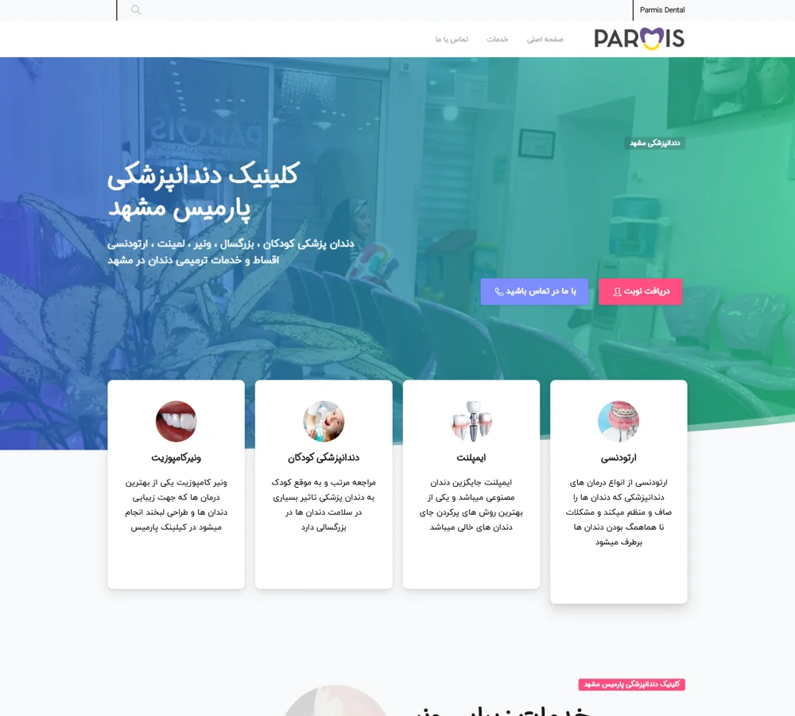
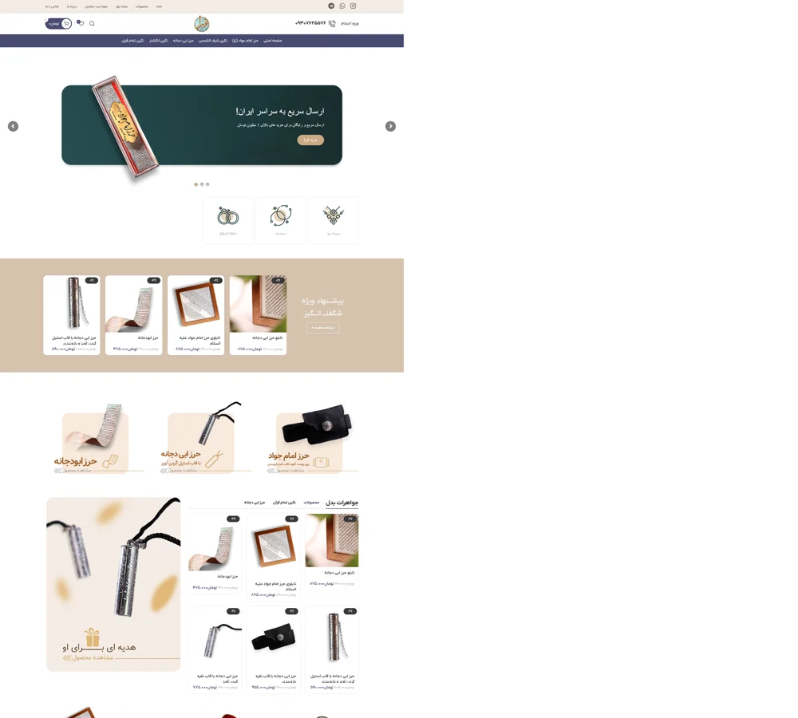
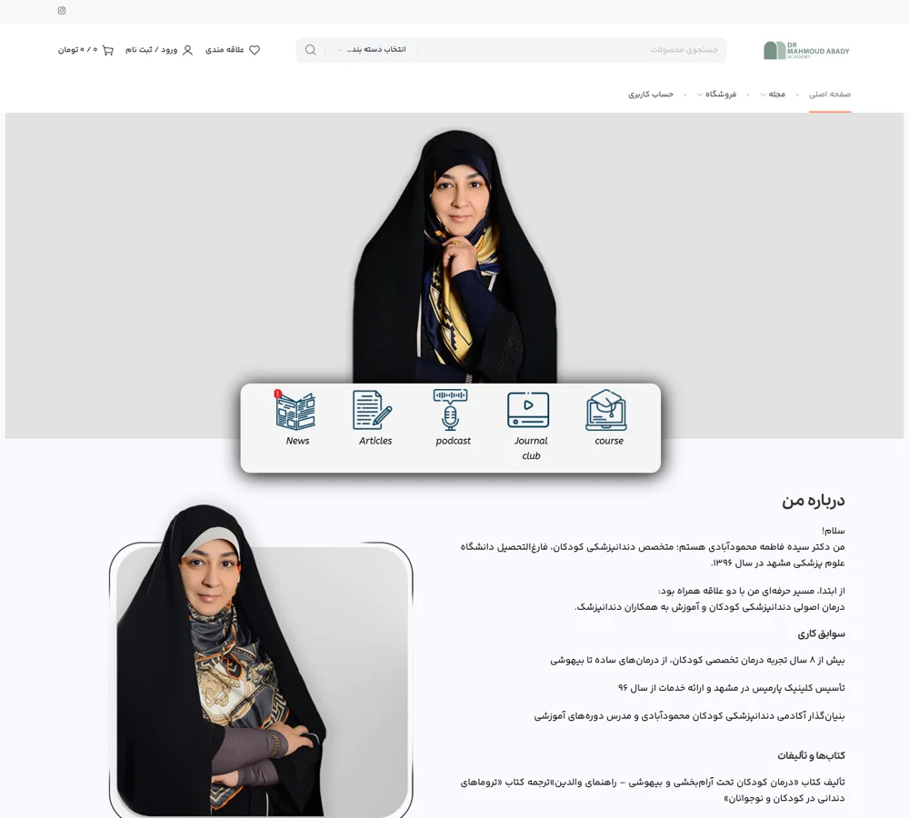
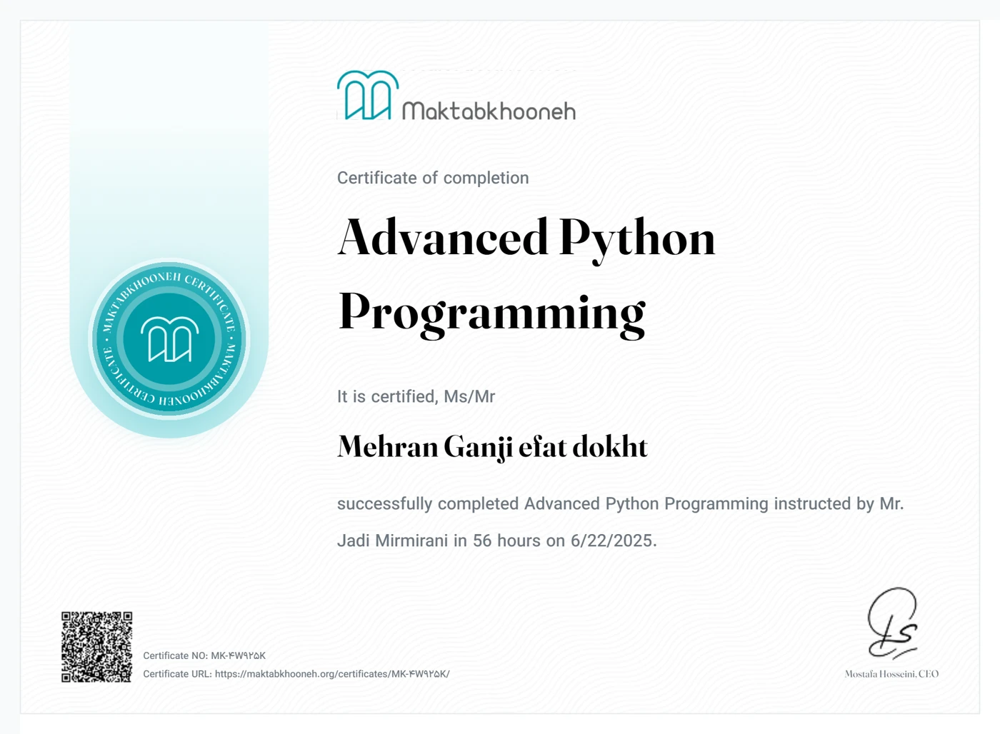

Parmis Dental
OngoingWebsite design, continuing support and SEO, working alongside the content team.
parmisdental.comSEO SPECIALIST · WORDPRESS DESIGNER
I'm Mehran, a freelance SEO specialist and website designer in Mashhad. I work with businesses and content teams, and I'm building practical experience with Python and Django.

01 / SELECTED WORK
A selection of websites I designed, with support and SEO work shaped around each project.
Website design, continuing support and SEO, working alongside the content team.
parmisdental.com
Website design, support and SEO in collaboration with the project and content teams.
noora24.com
An educational website I designed to present learning content and courses.
drfm.net02 / SEARCH PERFORMANCE
Historical website reports from Google Search Console, captured in October 2025.
Reporting windows differ. Click totals are not directly comparable.
Parmis and Noora24: team projects covering design, support and SEO. Javaher: consulting only. DRFM: website design. These are site-level figures, not individual results or current performance. Noora24's report may extend beyond my engagement.
03 / PYTHON & DJANGO
Alongside my SEO work, I'm developing practical skills with Python and Django through a clinic management project.
The project brings together appointments, patient records and payment tracking. It is a hands-on software project in my portfolio, while SEO and website design remain my main professional focus.
Ask me about this projectMy role: project developer
Scheduling and tracking clinic visits.
Organizing patient and treatment information.
Recording invoices, payments and balances.
WHAT I WORK WITH

04 / CERTIFICATE
A 56-hour course completed with Maktabkhooneh, taught by Jadi Mirmirani.
Certificate of course completion.
LET'S TALK
Based in Mashhad, Iran. Available for remote and freelance collaboration.
mrganji.m96@gmail.com+98 902 123 0433Download my visual SEO resume with selected projects and search performance charts.
English resume · PDFPersian resume · PDF